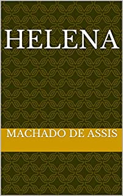

Obras
Machado de Assis foi um dos maiores escritores do Brasil, sendo percursor do realismo brasileiro e fundador da Academia Brasileira de Letras.

1º Memórias Póstumas de Brás Cubas

Este é um dos romances mais conhecidos de Machado de Assis e uma obra-prima da literatura brasileira. É uma sátira perspicaz da sociedade brasileira do século XIX, narrada por um defunto, Brás Cubas, que conta suas memórias de maneira irônica e mordaz.
2º Dom Casmurro

Outra obra central de Machado de Assis, "Dom Casmurro" é um romance que explora temas como ciúme, traição e memória. A narrativa é centrada na figura do protagonista, Bento Santiago (também conhecido como Dom Casmurro), e sua conturbada relação com sua esposa Capitu
3º Quincas Borba

Neste romance, Machado de Assis continua a explorar temas como a loucura, a moralidade e a filosofia. A história gira em torno de Rubião, um ingênuo e bondoso professor que herda uma grande fortuna e é influenciado pelas ideias delirantes de seu amigo Quincas Borba.
4º Helena
"Helena" é um romance que aborda temas como amor, redenção e reconciliação. A história segue o protagonista Estácio e sua jornada de amor por Helena, uma jovem criada em circunstâncias difíceis, enquanto eles enfrentam desafios sociais e familiares.
5º Memorial de Aires
Este romance é notável por sua narrativa mais calma e introspectiva, contada a partir da perspectiva de um diplomata aposentado, Aires. "Memorial de Aires" oferece uma reflexão delicada sobre a vida, o envelhecimento e a solidão, mostrando a habilidade de Machado de Assis em explorar os aspectos mais sutis da condição humana.